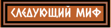

Однажды Зевс влюбился в богиню ночи Лето. Но когда ревнивая Гера, супруга Зевса, узнала, что Лето ждёт ребёнка от верховного бога, страшный гнев обуял ёе. Она поклялась, что Лето не найдёт себе пристанища на твёрдой земле, чтобы произвести на свет ребёнка. и послала Гера по всей земле чудовищного змея Пифона, дабы тот преследовал несчастную богиню.
Она ступала на плодородные земли, но земля под ногами становилась каменистой и бесплодной. Она приближалась к островам, но волны отталкивали её прочь. Даже морская пучина, куда она попыталась скрыться, взволновалась и изгнала ёе.
Наконец, изнемогая от родовых схваток, достигла Лето бесплодного плавучего острова Ортигия, который не был прикреплён к морскому дну. Поскольку это была не твёрдая земля, проклятие Геры, казалось, не имело над ним власти. Но и тут Гера не отступила. Она задержала на Олимпе богиню родов Илифию, без помощи которой роды стали ещё тяжелее. Девять долгих дней Лето мучилась в схватках на острове, пока наконец не смогла родить первого ребёнка — девочку, богиню Артемиду. и тут же, по воле богов, новорождённая богиня помогла матери принять своего брата-близнеца. Так, на девятый день, под ярким солнцем, родился златокудрый Аполлон.
Сам остров возрадовался рождению бога. Зевс даровал ему несокрушимость, и с тех пор Ортигия, получившая новое имя — Делос, перестала дрейфовать и была навеки прикована к морскому дну.
Первым делом мать поднесла младенцу Аполлону нектар и амброзию, и тут же произошло чудо: божественная пища придала ему недетскую силу. Он поднялся и воскликнул громким голосом:
— Дайте мне лиру и лук, и я донесу до людей волю Зевса!
Сказав это, юный бог ступил на землю, и Делос, увидев его, весь засиял золотом. Аполлон отправился в путь, и вскоре его ждало первое великое свершение.
Он достиг Дельф, у подножия горы Парнас, где обитал насланный Герой Пифон. Исполненный гнева за страдания своей матери, Аполлон натянул серебряный лук и выпустил тучу золотых стрел. Он преследовал чудовище до самого его святилища на горе Парнас и там нанёс ему смертельный удар.
Так Аполлон, только что родившийся, одержал свою первую победу, освободив землю от ужасного змея.
